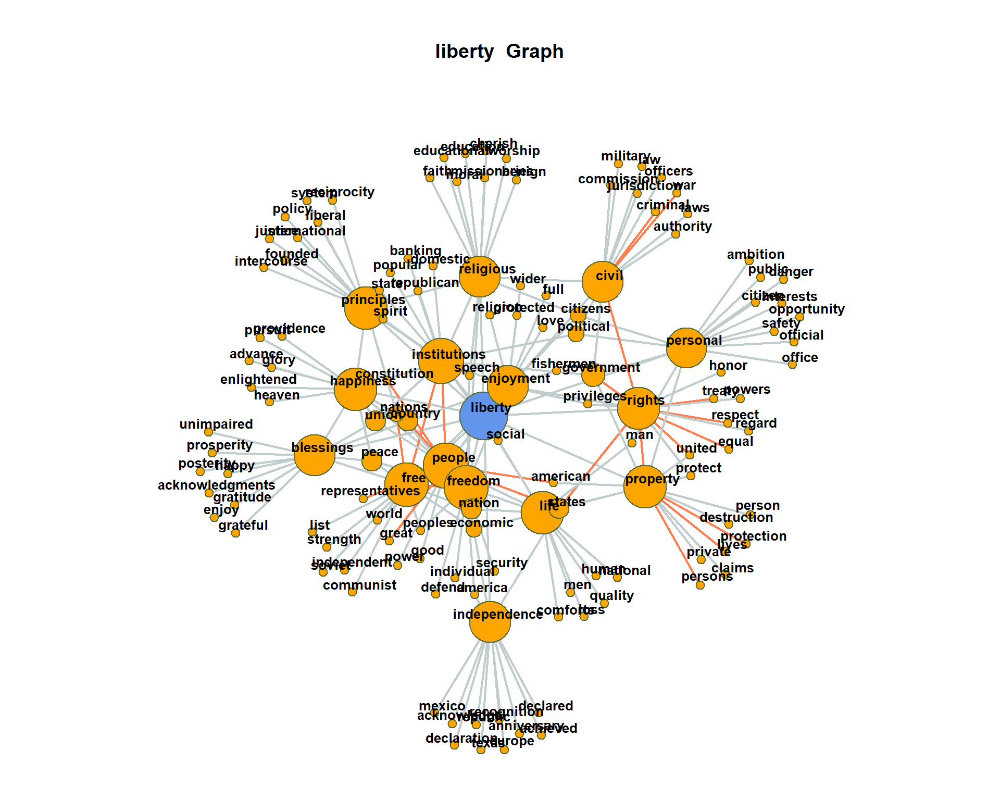

Co-occurrence and Collocations
Martin Schweinberger
2020-04-13

1 Introduction
This tutorial introduces collocation and co-occurrence analysis with “R”. It is shown how different significance measures can be used to extract semantic links between words and how such links can be displayed. The entire code for the sections below can be downloaded here.
How would you find words that are associated with a specific term and how can you visualize such word nets? This tuturial addresses this issue by focusing on co-occurrence and collocations of words. Collocations are words that occur very frequently together. For example, “Merry Christams” is a collocation because “merry” and “Christmas” occur more frequently together than would be expected by chance. This means that if you were to shuffle all words in a corpus and would then test the frequency of how often “merry” and “Christmas” co-occured, they would occur significantly less often in the shuffeled or randomized corpus than in a corpus that contain non-shuffeled natural speech.
But how can you determine if words occur more frequently together than would be expected by chance? This tutorial will answer this question.
2 Preparation and session set up
As all caluculations and visualizations in this tutorial rely on “R”, it is necessary to install “R” and “RStudio”. If these programms (or, in the case of “R”, environments) are not already installed on your machine, please search for them in your favorite search engine and add the term “download”. Open any of the first few links and follow the installation instructions (they are easy to follow, do not require any specifications, and are pretty much self-explanatory).
In addition, certain “libraries” or “packages” need to be installed so that the scripts shown below are executed without errors. Before turning to the code below, please install the librariesby running the code below this paragraph. If you have already installed the libraries mentioned below, then you can skip ahead ignore this section. To install the necessary libraries, simply run the following code - it may take some time (between 1 and 5 minutes to install all of the libraries so you do not need to worry if it takes some time).
# clean current workspace
rm(list=ls(all=T))
# set options
options(stringsAsFactors = F) # no automatic data transformation
options("scipen" = 100, "digits" = 4) # supress math annotation
# install libraries
install.packages(c("collostructions"))Once you have installed “R” and “R-Studio”, and have also initiated the session by executing the code shown above, you are good to go.
3 Loading and modifying data
We start the analysis by loading the tm package and the data as well as a list of stopwords (words that do not have semantic emaning).
# load library
library(tm)
# load data
textdata <- read.csv("https://slcladal.github.io/data/sotu.csv", sep = ";", encoding = "UTF-8")
# load stopwords
english_stopwords <- readLines("https://slcladal.github.io/resources/stopwords_en.txt", encoding = "UTF-8")
# inspect data
head(textdata)## doc_id speech_type president date
## 1 1 State of the Union Address George Washington 1790-01-08
## 2 2 State of the Union Address George Washington 1790-12-08
## 3 3 State of the Union Address George Washington 1791-10-25
## 4 4 State of the Union Address George Washington 1792-11-06
## 5 5 State of the Union Address George Washington 1793-12-03
## 6 6 State of the Union Address George Washington 1794-11-19
## text
## 1 Fellow-Citizens of the Senate and House of Representatives:\n\nI embrace with great satisfaction the opportunity which now presents itself\nof congratulating you on the present favorable prospects of our public\naffairs. The recent accession of the important state of North Carolina to\nthe Constitution of the United States (of which official information has\nbeen received), the rising credit and respectability of our country, the\ngeneral and increasing good will toward the government of the Union, and\nthe concord, peace, and plenty with which we are blessed are circumstances\nauspicious in an eminent degree to our national prosperity.\n\nIn resuming your consultations for the general good you can not but derive\nencouragement from the reflection that the measures of the last session\nhave been as satisfactory to your constituents as the novelty and\ndifficulty of the work allowed you to hope. Still further to realize their\nexpectations and to secure the blessings which a gracious Providence has\nplaced within our reach will in the course of the present important session\ncall for the cool and deliberate exertion of your patriotism, firmness, and\nwisdom.\n\nAmong the many interesting objects which will engage your attention that of\nproviding for the common defense will merit particular regard. To be\nprepared for war is one of the most effectual means of preserving peace.\n\nA free people ought not only to be armed, but disciplined; to which end a\nuniform and well-digested plan is requisite; and their safety and interest\nrequire that they should promote such manufactories as tend to render them\nindependent of others for essential, particularly military, supplies.\n\nThe proper establishment of the troops which may be deemed indispensable\nwill be entitled to mature consideration. In the arrangements which may be\nmade respecting it it will be of importance to conciliate the comfortable\nsupport of the officers and soldiers with a due regard to economy.\n\nThere was reason to hope that the pacific measures adopted with regard to\ncertain hostile tribes of Indians would have relieved the inhabitants of\nour southern and western frontiers from their depredations, but you will\nperceive from the information contained in the papers which I shall direct\nto be laid before you (comprehending a communication from the Commonwealth\nof Virginia) that we ought to be prepared to afford protection to those\nparts of the Union, and, if necessary, to punish aggressors.\n\nThe interests of the United States require that our intercourse with other\nnations should be facilitated by such provisions as will enable me to\nfulfill my duty in that respect in the manner which circumstances may\nrender most conducive to the public good, and to this end that the\ncompensation to be made to the persons who may be employed should,\naccording to the nature of their appointments, be defined by law, and a\ncompetent fund designated for defraying the expenses incident to the\nconduct of foreign affairs.\n\nVarious considerations also render it expedient that the terms on which\nforeigners may be admitted to the rights of citizens should be speedily\nascertained by a uniform rule of naturalization.\n\nUniformity in the currency, weights, and measures of the United States is\nan object of great importance, and will, I am persuaded, be duly attended\nto.\n\nThe advancement of agriculture, commerce, and manufactures by all proper\nmeans will not, I trust, need recommendation; but I can not forbear\nintimating to you the expediency of giving effectual encouragement as well\nto the introduction of new and useful inventions from abroad as to the\nexertions of skill and genius in producing them at home, and of\nfacilitating the intercourse between the distant parts of our country by a\ndue attention to the post-office and post-roads.\n\nNor am I less persuaded that you will agree with me in opinion that there\nis nothing which can better deserve your patronage than the promotion of\nscience and literature. Knowledge is in every country the surest basis of\npublic happiness. In one in which the measures of government receive their\nimpressions so immediately from the sense of the community as in ours it is\nproportionably essential.\n\nTo the security of a free constitution it contributes in various ways--by\nconvincing those who are intrusted with the public administration that\nevery valuable end of government is best answered by the enlightened\nconfidence of the people, and by teaching the people themselves to know and\nto value their own rights; to discern and provide against invasions of\nthem; to distinguish between oppression and the necessary exercise of\nlawful authority; between burthens proceeding from a disregard to their\nconvenience and those resulting from the inevitable exigencies of society;\nto discriminate the spirit of liberty from that of licentiousness--\ncherishing the first, avoiding the last--and uniting a speedy but\ntemperate vigilance against encroachments, with an inviolable respect to\nthe laws.\n\nWhether this desirable object will be best promoted by affording aids to\nseminaries of learning already established, by the institution of a\nnational university, or by any other expedients will be well worthy of a\nplace in the deliberations of the legislature.\n\nGentlemen of the House of Representatives:\n\nI saw with peculiar pleasure at the close of the last session the\nresolution entered into by you expressive of your opinion that an adequate\nprovision for the support of the public credit is a matter of high\nimportance to the national honor and prosperity. In this sentiment I\nentirely concur; and to a perfect confidence in your best endeavors to\ndevise such a provision as will be truly with the end I add an equal\nreliance on the cheerful cooperation of the other branch of the\nlegislature.\n\nIt would be superfluous to specify inducements to a measure in which the\ncharacter and interests of the United States are so obviously so deeply\nconcerned, and which has received so explicit a sanction from your\ndeclaration.\n\nGentlemen of the Senate and House of Representatives:\n\nI have directed the proper officers to lay before you, respectively, such\npapers and estimates as regard the affairs particularly recommended to your\nconsideration, and necessary to convey to you that information of the state\nof the Union which it is my duty to afford.\n\nThe welfare of our country is the great object to which our cares and\nefforts ought to be directed, and I shall derive great satisfaction from a\ncooperation with you in the pleasing though arduous task of insuring to our\nfellow citizens the blessings which they have a right to expect from a\nfree, efficient, and equal government.
## 2 Fellow-Citizens of the Senate and House of Representatives:\n\nIn meeting you again I feel much satisfaction in being able to repeat my\ncongratulations on the favorable prospects which continue to distinguish\nour public affairs. The abundant fruits of another year have blessed our\ncountry with plenty and with the means of a flourishing commerce.\n\nThe progress of public credit is witnessed by a considerable rise of\nAmerican stock abroad as well as at home, and the revenues allotted for\nthis and other national purposes have been productive beyond the\ncalculations by which they were regulated. This latter circumstance is the\nmore pleasing, as it is not only a proof of the fertility of our resources,\nbut as it assures us of a further increase of the national respectability\nand credit, and, let me add, as it bears an honorable testimony to the\npatriotism and integrity of the mercantile and marine part of our citizens.\nThe punctuality of the former in discharging their engagements has been\nexemplary.\n\nIn conformity to the powers vested in me by acts of the last session, a\nloan of 3,000,000 florins, toward which some provisional measures had\npreviously taken place, has been completed in Holland. As well the celerity\nwith which it has been filled as the nature of the terms (considering the\nmore than ordinary demand for borrowing created by the situation of Europe)\ngive a reasonable hope that the further execution of those powers may\nproceed with advantage and success. The Secretary of the Treasury has my\ndirections to communicate such further particulars as may be requisite for\nmore precise information.\n\nSince your last sessions I have received communications by which it appears\nthat the district of Kentucky, at present a part of Virginia, has concurred\nin certain propositions contained in a law of that State, in consequence of\nwhich the district is to become a distinct member of the Union, in case the\nrequisite sanction of Congress be added. For this sanction application is\nnow made. I shall cause the papers on this very transaction to be laid\nbefore you.\n\nThe liberality and harmony with which it has been conducted will be found\nto do great honor to both the parties, and the sentiments of warm\nattachment to the Union and its present Government expressed by our fellow\ncitizens of Kentucky can not fail to add an affectionate concern for their\nparticular welfare to the great national impressions under which you will\ndecide on the case submitted to you.\n\nIt has been heretofore known to Congress that frequent incursions have been\nmade on our frontier settlements by certain banditti of Indians from the\nnorthwest side of the Ohio. These, with some of the tribes dwelling on and\nnear the Wabash, have of late been particularly active in their\ndepredations, and being emboldened by the impunity of their crimes and\naided by such parts of the neighboring tribes as could be seduced to join\nin their hostilities or afford them a retreat for their prisoners and\nplunder, they have, instead of listening to the humane invitations and\novertures made on the part of the United States, renewed their violences\nwith fresh alacrity and greater effect. The lives of a number of valuable\ncitizens have thus been sacrificed, and some of them under circumstances\npeculiarly shocking, whilst others have been carried into a deplorable\ncaptivity.\n\nThese aggravated provocations rendered it essential to the safety of the\nWestern settlements that the aggressors should be made sensible that the\nGovernment of the Union is not less capable of punishing their crimes than\nit is disposed to respect their rights and reward their attachments. As\nthis object could not be effected by defensive measures, it became\nnecessary to put in force the act which empowers the President to call out\nthe militia for the protection of the frontiers, and I have accordingly\nauthorized an expedition in which the regular troops in that quarter are\ncombined with such drafts of militia as were deemed sufficient. The event\nof the measure is yet unknown to me. The Secretary of War is directed to\nlay before you a statement of the information on which it is founded, as\nwell as an estimate of the expense with which it will be attended.\n\nThe disturbed situation of Europe, and particularly the critical posture of\nthe great maritime powers, whilst it ought to make us the more thankful for\nthe general peace and security enjoyed by the United States, reminds us at\nthe same time of the circumspection with which it becomes us to preserve\nthese blessings. It requires also that we should not overlook the tendency\nof a war, and even of preparations for a war, among the nations most\nconcerned in active commerce with this country to abridge the means, and\nthereby at least enhance the price, of transporting its valuable\nproductions to their markets. I recommend it to your serious reflections\nhow far and in what mode it may be expedient to guard against\nembarrassments from these contingencies by such encouragements to our own\nnavigation as will render our commerce and agriculture less dependent on\nforeign bottoms, which may fail us in the very moments most interesting to\nboth of these great objects. Our fisheries and the transportation of our\nown produce offer us abundant means for guarding ourselves against this\nevil.\n\nYour attention seems to be not less due to that particular branch of our\ntrade which belongs to the Mediterranean. So many circumstances unite in\nrendering the present state of it distressful to us that you will not think\nany deliberations misemployed which may lead to its relief and protection.\n\nThe laws you have already passed for the establishment of a judiciary\nsystem have opened the doors of justice to all descriptions of persons. You\nwill consider in your wisdom whether improvements in that system may yet be\nmade, and particularly whether an uniform process of execution on sentences\nissuing from the Federal courts be not desirable through all the States.\n\nThe patronage of our commerce, of our merchants and sea men, has called for\nthe appointment of consuls in foreign countries. It seems expedient to\nregulate by law the exercise of that jurisdiction and those functions which\nare permitted them, either by express convention or by a friendly\nindulgence, in the places of their residence. The consular convention, too,\nwith His Most Christian Majesty has stipulated in certain cases the aid of\nthe national authority to his consuls established here. Some legislative\nprovision is requisite to carry these stipulations into full effect.\n\nThe establishment of the militia, of a mint, of standards of weights and\nmeasures, of the post office and post roads are subjects which I presume\nyou will resume of course, and which are abundantly urged by their own\nimportance.\n\nGentlemen of the House of Representatives:\n\nThe sufficiency of the revenues you have established for the objects to\nwhich they are appropriated leaves no doubt that the residuary provisions\nwill be commensurate to the other objects for which the public faith stands\nnow pledged. Allow me, moreover, to hope that it will be a favorite policy\nwith you, not merely to secure a payment of the interest of the debt\nfunded, but as far and as fast as the growing resources of the country will\npermit to exonerate it of the principal itself. The appropriation you have\nmade of the Western land explains your dispositions on this subject, and I\nam persuaded that the sooner that valuable fund can be made to contribute,\nalong with the other means, to the actual reduction of the public debt the\nmore salutary will the measure be to every public interest, as well as the\nmore satisfactory to our constituents.\n\nGentlemen of the Senate and House of Representatives:\n\nIn pursuing the various and weighty business of the present session I\nindulge the fullest persuasion that your consultation will be equally\nmarked with wisdom and animated by the love of your country. In whatever\nbelongs to my duty you shall have all the cooperation which an undiminished\nzeal for its welfare can inspire. It will be happy for us both, and our\nbest reward, if, by a successful administration of our respective trusts,\nwe can make the established Government more and more instrumental in\npromoting the good of our fellow citizens, and more and more the object of\ntheir attachment and confidence.\n\nGO. WASHINGTON
## 3 Fellow-Citizens of the Senate and House of Representatives:\n\n"In vain may we expect peace with the Indians on our frontiers so long as a\nlawless set of unprincipled wretches can violate the rights of hospitality,\nor infringe the most solemn treaties, without receiving the punishment they\nso justly merit."\n\nI meet you upon the present occasion with the feelings which are naturally\ninspired by a strong impression of the prosperous situations of our common\ncountry, and by a persuasion equally strong that the labors of the session\nwhich has just commenced will, under the guidance of a spirit no less\nprudent than patriotic, issue in measures conducive to the stability and\nincrease of national prosperity.\n\nNumerous as are the providential blessings which demand our grateful\nacknowledgments, the abundance with which another year has again rewarded\nthe industry of the husbandman is too important to escape recollection.\n\nYour own observations in your respective situations will have satisfied you\nof the progressive state of agriculture, manufactures, commerce, and\nnavigation. In tracing their causes you will have remarked with particular\npleasure the happy effects of that revival of confidence, public as well as\nprivate, to which the Constitution and laws of the United States have so\neminently contributed; and you will have observed with no less interest new\nand decisive proofs of the increasing reputation and credit of the nation.\nBut you nevertheless can not fail to derive satisfaction from the\nconfirmation of these circumstances which will be disclosed in the several\nofficial communications that will be made to you in the course of your\ndeliberations.\n\nThe rapid subscriptions to the Bank of the United States, which completed\nthe sum allowed to be subscribed in a single day, is among the striking and\npleasing evidences which present themselves, not only of confidence in the\nGovernment, but of resource in the community.\n\nIn the interval of your recess due attention has been paid to the execution\nof the different objects which were specially provided for by the laws and\nresolutions of the last session.\n\nAmong the most important of these is the defense and security of the\nwestern frontiers. To accomplish it on the most humane principles was a\nprimary wish.\n\nAccordingly, at the same time the treaties have been provisionally\nconcluded and other proper means used to attach the wavering and to confirm\nin their friendship the well-disposed tribes of Indians, effectual measures\nhave been adopted to make those of a hostile description sensible that a\npacification was desired upon terms of moderation and justice.\n\nThose measures having proved unsuccessful, it became necessary to convince\nthe refractory of the power of the United States to punish their\ndepredations. Offensive operations have therefore been directed, to be\nconducted, however, as consistently as possible with the dictates of\nhumanity.\n\nSome of these have been crowned with full success and others are yet\ndepending. The expeditions which have been completed were carried on under\nthe authority and at the expense of the United States by the militia of\nKentucky, whose enterprise, intrepidity, and good conduct are entitled of\npeculiar commendation.\n\nOvertures of peace are still continued to the deluded tribes, and\nconsiderable numbers of individuals belonging to them have lately renounced\nall further opposition, removed from their former situations, and placed\nthemselves under the immediate protection of the United States.\n\nIt is sincerely to be desired that all need of coercion in future may cease\nand that an intimate intercourse may succeed, calculated to advance the\nhappiness of the Indians and to attach them firmly to the United States.\n\nIn order to this it seems necessary--That they should experience the\nbenefits of an impartial dispensation of justice. That the mode of\nalienating their lands, the main source of discontent and war, should be so\ndefined and regulated as to obviate imposition and as far as may be\npracticable controversy concerning the reality and extent of the\nalienations which are made. That commerce with them should be promoted\nunder regulations tending to secure an equitable deportment toward them,\nand that such rational experiments should be made for imparting to them the\nblessings of civilization as may from time to time suit their condition.\nThat the Executive of the United States should be enabled to employ the\nmeans to which the Indians have been long accustomed for uniting their\nimmediate interests with the preservation of peace. And that efficacious\nprovision should be made for inflicting adequate penalties upon all those\nwho, by violating their rights, shall infringe the treaties and endanger\nthe peace of the Union. A system corresponding with the mild principles of\nreligion and philanthropy toward an unenlightened race of men, whose\nhappiness materially depends on the conduct of the United States, would be\nas honorable to the national character as conformable to the dictates of\nsound policy.\n\nThe powers specially vested in me by the act laying certain duties on\ndistilled spirits, which respect the subdivisions of the districts into\nsurveys, the appointment of officers, and the assignment of compensations,\nhave likewise been carried into effect. In a manner in which both materials\nand experience were wanting to guide the calculation it will be readily\nconceived that there must have been difficulty in such an adjustment of the\nrates of compensation as would conciliate a reasonable competency with a\nproper regard to the limits prescribed by the law. It is hoped that the\ncircumspection which has been used will be found in the result to have\nsecured the last of the two objects; but it is probable that with a view\nto the first in some instances a revision of the provision will be found\nadvisable.\n\nThe impressions with which this law has been received by the community have\nbeen upon the whole such as were to be expected among enlightened and\nwell-disposed citizens from the propriety and necessity of the measure. The\nnovelty, however, of the tax in a considerable part of the United States\nand a misconception of some of its provisions have given occasion in\nparticular places to some degree of discontent; but it is satisfactory to\nknow that this disposition yields to proper explanations and more just\napprehensions of the true nature of the law, and I entertain a full\nconfidence that it will in all give way to motives which arise out of a\njust sense of duty and a virtuous regard to the public welfare.\n\nIf there are any circumstances in the law which consistently with its main\ndesign may be so varied as to remove any well-intentioned objections that\nmay happen to exist, it will consist with a wise moderation to make the\nproper variations. It is desirable on all occasions to unite with a steady\nand firm adherence to constitutional and necessary acts of Government the\nfullest evidence of a disposition as far as may be practicable to consult\nthe wishes of every part of the community and to lay the foundations of the\npublic administration in the affections of the people.\n\nPursuant to the authority contained in the several acts on that subject, a\ndistrict of 10 miles square for the permanent seat of the Government of the\nUnited States has been fixed and announced by proclamation, which district\nwill comprehend lands on both sides of the river Potomac and the towns of\nAlexandria and Georgetown. A city has also been laid out agreeably to a\nplan which will be placed before Congress, and as there is a prospect,\nfavored by the rate of sales which have already taken place, of ample funds\nfor carrying on the necessary public buildings, there is every expectation\nof their due progress.\n\nThe completion of the census of the inhabitants, for which provision was\nmade by law, has been duly notified (excepting one instance in which the\nreturn has been informal, and another in which it has been omitted or\nmiscarried), and the returns of the officers who were charged with this\nduty, which will be laid before you, will give you the pleasing assurance\nthat the present population of the United States borders on 4,000,000\npersons.\n\nIt is proper also to inform you that a further loan of 2,500,000 florins\nhas been completed in Holland, the terms of which are similar to those of\nthe one last announced, except as to a small reduction of charges. Another,\non like terms, for 6,000,000 florins, had been set on foot under\ncircumstances that assured an immediate completion.\n\nGentlemen of the Senate:\n\nTwo treaties which have been provisionally concluded with the Cherokees and\nSix Nations of Indians will be laid before you for your consideration and\nratification.\n\nGentlemen of the House of Representatives:\n\nIn entering upon the discharge of your legislative trust you must\nanticipate with pleasure that many of the difficulties necessarily incident\nto the first arrangements of a new government for an extensive country have\nbeen happily surmounted by the zealous and judicious exertions of your\npredecessors in cooperation with the other branch of the Legislature. The\nimportant objects which remain to be accomplished will, I am persuaded, be\nconducted upon principles equally comprehensive and equally well calculated\nof the advancement of the general weal.\n\nThe time limited for receiving subscriptions to the loans proposed by the\nact making provision for the debt of the United States having expired,\nstatements from the proper department will as soon as possible apprise you\nof the exact result. Enough, however, is known already to afford an\nassurance that the views of that act have been substantially fulfilled. The\nsubscription in the domestic debt of the United States has embraced by far\nthe greatest proportion of that debt, affording at the same time proof of\nthe general satisfaction of the public creditors with the system which has\nbeen proposed to their acceptance and of the spirit of accommodation to the\nconvenience of the Government with which they are actuated. The\nsubscriptions in the debts of the respective States as far as the\nprovisions of the law have permitted may be said to be yet more general.\nThe part of the debt of the United States which remains unsubscribed will\nnaturally engage your further deliberations.\n\nIt is particularly pleasing to me to be able to announce to you that the\nrevenues which have been established promise to be adequate to their\nobjects, and may be permitted, if no unforeseen exigency occurs, to\nsupersede for the present the necessity of any new burthens upon our\nconstituents.\n\nAn object which will claim your early attention is a provision for the\ncurrent service of the ensuing year, together with such ascertained demands\nupon the Treasury as require to be immediately discharged, and such\ncasualties as may have arisen in the execution of the public business, for\nwhich no specific appropriation may have yet been made; of all which a\nproper estimate will be laid before you.\n\nGentlemen of the Senate and of the House of Representatives:\n\nI shall content myself with a general reference to former communications\nfor several objects upon which the urgency of other affairs has hitherto\npostponed any definitive resolution. Their importance will recall them to\nyour attention, and I trust that the progress already made in the most\narduous arrangements of the Government will afford you leisure to resume\nthem to advantage.\n\nThese are, however, some of them of which I can not forbear a more\nparticular mention. These are the militia, the post office and post roads,\nthe mint, weights and measures, a provision for the sale of the vacant\nlands of the United States.\n\nThe first is certainly an object of primary importance whether viewed in\nreference to the national security to the satisfaction of the community or\nto the preservation of order. In connection with this the establishment of\ncompetent magazines and arsenals and the fortification of such places as\nare peculiarly important and vulnerable naturally present themselves to\nconsideration. The safety of the United States under divine protection\nought to rest on the basis of systematic and solid arrangements, exposed as\nlittle as possible to the hazards of fortuitous circumstances.\n\nThe importance of the post office and post roads on a plan sufficiently\nliberal and comprehensive, as they respect the expedition, safety, and\nfacility of communication, is increased by their instrumentality in\ndiffusing a knowledge of the laws and proceedings of the Government, which,\nwhile it contributes to the security of the people, serves also to guard\nthem against the effects of misrepresentation and misconception. The\nestablishment of additional cross posts, especially to some of the\nimportant points in the Western and Northern parts of the Union, can not\nfail to be of material utility.\n\nThe disorders in the existing currency, and especially the scarcity of\nsmall change, a scarcity so peculiarly distressing to the poorer classes,\nstrongly recommend the carrying into immediate effect the resolution\nalready entered into concerning the establishment of a mint. Measures have\nbeen taken pursuant to that resolution for procuring some of the most\nnecessary artists, together with the requisite apparatus.\n\nAn uniformity in the weights and measures of the country is among the\nimportant objects submitted to you by the Constitution, and if it can be\nderived from a standard at once invariable and universal, must be no less\nhonorable to the public councils than conducive to the public convenience.\n\nA provision for the sale of the vacant lands of the United States is\nparticularly urged, among other reasons, by the important considerations\nthat they are pledged as a fund for reimbursing the public debt; that if\ntimely and judiciously applied they may save the necessity of burthening\nour citizens with new taxes for the extinguishment of the principal; and\nthat being free to discharge the principal but in a limited proportion, no\nopportunity ought to be lost for availing the public of its right.\n\nGO. WASHINGTON
## 4 Fellow-Citizens of the Senate and House of Representatives:\n\nIt is some abatement of the satisfaction with which I meet you on the\npresent occasion that, in felicitating you on a continuance of the national\nprosperity generally, I am not able to add to it information that the\nIndian hostilities which have for some time past distressed our\nNorthwestern frontier have terminated.\n\nYou will, I am persuaded, learn with no less concern than I communicate it\nthat reiterated endeavors toward effecting a pacification have hitherto\nissued only in new and outrageous proofs of persevering hostility on the\npart of the tribes with whom we are in contest. An earnest desire to\nprocure tranquillity to the frontier, to stop the further effusion of\nblood, to arrest the progress of expense, to forward the prevalent wish of\nthe nation for peace has led to strenuous efforts through various channels\nto accomplish these desirable purposes; in making which efforts I consulted\nless my own anticipations of the event, or the scruples which some\nconsiderations were calculated to inspire, than the wish to find the object\nattainable, or if not attainable, to ascertain unequivocally that such is\nthe case.\n\nA detail of the measures which have been pursued and of their consequences,\nwhich will be laid before you, while it will confirm to you the want of\nsuccess thus far, will, I trust, evince that means as proper and as\nefficacious as could have been devised have been employed. The issue of\nsome of them, indeed, is still depending, but a favorable one, though not\nto be despaired of, is not promised by anything that has yet happened.\n\nIn the course of the attempts which have been made some valuable citizens\nhave fallen victims to their zeal for the public service. A sanction\ncommonly respected even among savages has been found in this instance\ninsufficient to protect from massacre the emissaries of peace. It will, I\npresume, be duly considered whether the occasion does not call for an\nexercise of liberality toward the families of the deceased.\n\nIt must add to your concern to be informed that, besides the continuation\nof hostile appearances among the tribes north of the Ohio, some threatening\nsymptoms have of late been revived among some of those south of it.\n\nA part of the Cherokees, known by the name of Chickamaugas, inhabiting five\nvillages on the Tennessee River, have long been in the practice of\ncommitting depredations on the neighboring settlements.\n\nIt was hoped that the treaty of Holston, made with the Cherokee Nation in\nJuly, 1791, would have prevented a repetition of such depredations; but the\nevent has not answered this hope. The Chickamaugas, aided by some banditti\nof another tribe in their vicinity, have recently perpetrated wanton and\nunprovoked hostilities upon the citizens of the United States in that\nquarter. The information which has been received on this subject will be\nlaid before you. Hitherto defensive precautions only have been strictly\nenjoined and observed.\n\nIt is not understood that any breach of treaty or aggression whatsoever on\nthe part of the United States or their citizens is even alleged as a\npretext for the spirit of hostility in this quarter.\n\nI have reason to believe that every practicable exertion has been made\n(pursuant to the provision by law for that purpose) to be prepared for the\nalternative of a prosecution of the war in the event of a failure of\npacific overtures. A large proportion of the troops authorized to be raised\nhave been recruited, though the number is still incomplete, and pains have\nbeen taken to discipline and put them in condition for the particular kind\nof service to be performed. A delay of operations (besides being dictated\nby the measures which were pursuing toward a pacific termination of the\nwar) has been in itself deemed preferable to immature efforts. A statement\nfrom the proper department with regard to the number of troops raised, and\nsome other points which have been suggested, will afford more precise\ninformation as a guide to the legislative consultations, and among other\nthings will enable Congress to judge whether some additional stimulus to\nthe recruiting service may not be advisable.\n\nIn looking forward to the future expense of the operations which may be\nfound inevitable I derive consolation from the information I receive that\nthe product of the revenues for the present year is likely to supersede the\nnecessity of additional burthens on the community for the service of the\nensuing year. This, however, will be better ascertained in the course of\nthe session, and it is proper to add that the information alluded to\nproceeds upon the supposition of no material extension of the spirit of\nhostility.\n\nI can not dismiss the subject of Indian affairs without again recommending\nto your consideration the expediency of more adequate provision for giving\nenergy to the laws throughout our interior frontier and for restraining the\ncommission of outrages upon the Indians, without which all pacific plans\nmust prove nugatory. To enable, by competent rewards, the employment of\nqualified and trusty persons to reside among them as agents would also\ncontribute to the preservation of peace and good neighborhood. If in\naddition to these expedients an eligible plan could be devised for\npromoting civilization among the friendly tribes and for carrying on trade\nwith them upon a scale equal to their wants and under regulations\ncalculated to protect them from imposition and extortion, its influence in\ncementing their interest with ours could not but be considerable.\n\nThe prosperous state of our revenue has been intimated. This would be still\nmore the case were it not for the impediments which in some places continue\nto embarrass the collection of the duties on spirits distilled within the\nUnited States. These impediments have lessened and are lessening in local\nextent, and, as applied to the community at large, the contentment with the\nlaw appears to be progressive.\n\nBut symptoms of increased opposition having lately manifested themselves in\ncertain quarters, I judged a special interposition on my part proper and\nadvisable, and under this impression have issued a proclamation warning\nagainst all unlawful combinations and proceedings having for their object\nor tending to obstruct the operation of the law in question, and announcing\nthat all lawful ways and means would be strictly put in execution for\nbringing to justice the infractors thereof and securing obedience thereto.\n\nMeasures have also been taken for the prosecution of offenders, and\nCongress may be assured that nothing within constitutional and legal limits\nwhich may depend upon me shall be wanting to assert and maintain the just\nauthority of the laws. In fulfilling this trust I shall count entirely upon\nthe full cooperation of the other departments of the Government and upon\nthe zealous support of all good citizens.\n\nI can not forbear to bring again into the view of the Legislature the\nsubject of a revision of the judiciary system. A representation from the\njudges of the Supreme Court, which will be laid before you, points out some\nof the inconveniences that are experienced. In the course of the execution\nof the laws considerations arise out of the structure of the system which\nin some cases tend to relax their efficacy. As connected with this subject,\nprovisions to facilitate the taking of bail upon processes out of the\ncourts of the United States and a supplementary definition of offenses\nagainst the Constitution and laws of the Union and of the punishment for\nsuch offenses will, it is presumed, be found worthy of particular\nattention.\n\nObservations on the value of peace with other nations are unnecessary. It\nwould be wise, however, by timely provisions to guard against those acts of\nour own citizens which might tend to disturb it, and to put ourselves in a\ncondition to give that satisfaction to foreign nations which we may\nsometimes have occasion to require from them. I particularly recommend to\nyour consideration the means of preventing those aggressions by our\ncitizens on the territory of other nations, and other infractions of the\nlaw of nations, which, furnishing just subject of complaint, might endanger\nour peace with them; and, in general, the maintenance of a friendly\nintercourse with foreign powers will be presented to your attention by the\nexpiration of the law for that purpose, which takes place, if not renewed,\nat the close of the present session.\n\nIn execution of the authority given by the Legislature measures have been\ntaken for engaging some artists from abroad to aid in the establishment of\nour mint. Others have been employed at home. Provision has been made of the\nrequisite buildings, and these are now putting into proper condition for\nthe purposes of the establishment. There has also been a small beginning in\nthe coinage of half dimes, the want of small coins in circulation calling\nthe first attention to them.\n\nThe regulation of foreign coins in correspondency with the principles of\nour national coinage, as being essential to their due operation and to\norder in our money concerns, will, I doubt not, be resumed and completed.\n\nIt is represented that some provisions in the law which establishes the\npost office operate, in experiment, against the transmission of news papers\nto distant parts of the country. Should this, upon due inquiry, be found to\nbe the fact, a full conviction of the importance of facilitating the\ncirculation of political intelligence and information will, I doubt not,\nlead to the application of a remedy.\n\nThe adoption of a constitution for the State of Kentucky has been notified\nto me. The Legislature will share with me in the satisfaction which arises\nfrom an event interesting to the happiness of the part of the nation to\nwhich it relates and conducive to the general order.\n\nIt is proper likewise to inform you that since my last communication on the\nsubject, and in further execution of the acts severally making provision\nfor the public debt and for the reduction thereof, three new loans have\nbeen effected, each for 3,000,000 florins--one at Antwerp, at the annual\ninterest of 4.5%, with an allowance of 4% in lieu of all charges, in the\nother 2 at Amsterdam, at the annual interest of 4%, with an allowance of\n5.5% in one case and of 5% in the other in lieu of all charges. The rates\nof these loans and the circumstances under which they have been made are\nconfirmations of the high state of our credit abroad.\n\nAmong the objects to which these funds have been directed to be applied,\nthe payment of the debts due to certain foreign officers, according to the\nprovision made during the last session, has been embraced.\n\nGentlemen of the House of Representatives:\n\nI entertain a strong hope that the state of the national finances is now\nsufficiently matured to enable you to enter upon a systematic and effectual\narrangement for the regular redemption and discharge of the public debt,\naccording to the right which has been reserved to the Government. No\nmeasure can be more desirable, whether viewed with an eye to its intrinsic\nimportance or to the general sentiment and wish of the nation.\n\nProvision is likewise requisite for the reimbursement of the loan which has\nbeen made of the Bank of the United States, pursuant to the eleventh\nsection of the act by which it is incorporated. In fulfilling the public\nstipulations in this particular it is expected a valuable saving will be\nmade.\n\nAppropriations for the current service of the ensuing year and for such\nextraordinaries as may require provision will demand, and I doubt not will\nengage, your early attention.\n\nGentlemen of the Senate and of the House of Representatives:\n\nI content myself with recalling your attention generally to such objects,\nnot particularized in my present, as have been suggested in my former\ncommunications to you.\n\nVarious temporary laws will expire during the present session. Among these,\nthat which regulates trade and intercourse with the Indian tribes will\nmerit particular notice.\n\nThe results of your common deliberations hitherto will, I trust, be\nproductive of solid and durable advantages to our constituents, such as, by\nconciliating more and more their ultimate suffrage, will tend to strengthen\nand confirm their attachment to that Constitution of Government upon which,\nunder Divine Providence, materially depend their union, their safety, and\ntheir happiness.\n\nStill further to promote and secure these inestimable ends there is nothing\nwhich can have a more powerful tendency than the careful cultivation of\nharmony, combined with a due regard to stability, in the public councils.\n\nGO. WASHINGTON
## 5 Fellow-Citizens of the Senate and House of Representatives:\n\nSince the commencement of the term for which I have been again called into\noffice no fit occasion has arisen for expressing to my fellow citizens at\nlarge the deep and respectful sense which I feel of the renewed testimony\nof public approbation. While on the one hand it awakened my gratitude for\nall those instances of affectionate partiality with which I have been\nhonored by my country, on the other it could not prevent an earnest wish\nfor that retirement from which no private consideration should ever have\ntorn me. But influenced by the belief that my conduct would be estimated\naccording to its real motives, and that the people, and the authorities\nderived from them, would support exertions having nothing personal for\ntheir object, I have obeyed the suffrage which commanded me to resume the\nExecutive power; and I humbly implore that Being on whose will the fate of\nnations depends to crown with success our mutual endeavors for the general\nhappiness.\n\nAs soon as the war in Europe had embraced those powers with whom the United\nStates have the most extensive relations there was reason to apprehend that\nour intercourse with them might be interrupted and our disposition for\npeace drawn into question by the suspicions too often entertained by\nbelligerent nations. It seemed, therefore, to be my duty to admonish our\ncitizens of the consequences of a contraband trade and of hostile acts to\nany of the parties, and to obtain by a declaration of the existing legal\nstate of things an easier admission of our right to the immunities\nbelonging to our situation. Under these impressions the proclamation which\nwill be laid before you was issued.\n\nIn this posture of affairs, both new and delicate, I resolved to adopt\ngeneral rules which should conform to the treaties and assert the\nprivileges of the United States. These were reduced into a system, which\nwill be communicated to you. Although I have not thought of myself at\nliberty to forbid the sale of the prizes permitted by our treaty of\ncommerce with France to be brought into our ports, I have not refused to\ncause them to be restored when they were taken within the protection of our\nterritory, or by vessels commissioned or equipped in a warlike form within\nthe limits of the United States.\n\nIt rests with the wisdom of Congress to correct, improve, or enforce this\nplan of procedure; and it will probably be found expedient to extend the\nlegal code and the jurisdiction of the courts of the United States to many\ncases which, though dependent on principles already recognized, demand some\nfurther provisions.\n\nWhere individuals shall, within the United States, array themselves in\nhostility against any of the powers at war, or enter upon military\nexpeditions or enterprises within the jurisdiction of the United States, or\nusurp and exercise judicial authority within the United States, or where\nthe penalties on violations of the law of nations may have been\nindistinctly marked, or are inadequate--these offenses can not receive too\nearly and close an attention, and require prompt and decisive remedies.\n\nWhatsoever those remedies may be, they will be well administered by the\njudiciary, who possess a long-established course of investigation,\neffectual process, and officers in the habit of executing it.\n\nIn like manner, as several of the courts have doubted, under particular\ncircumstances, their power to liberate the vessels of a nation at peace,\nand even of a citizen of the United States, although seized under a false\ncolor of being hostile property, and have denied their power to liberate\ncertain captures within the protection of our territory, it would seem\nproper to regulate their jurisdiction in these points. But if the Executive\nis to be the resort in either of the two last-mentioned cases, it is hoped\nthat he will be authorized by law to have facts ascertained by the courts\nwhen for his own information he shall request it.\n\nI can not recommend to your notice measures for the fulfillment of our\nduties to the rest of the world without again pressing upon you the\nnecessity of placing ourselves in a condition of complete defense and of\nexacting from them the fulfillment of their duties toward us. The United\nStates ought not to indulge a persuasion that, contrary to the order of\nhuman events, they will forever keep at a distance those painful appeals to\narms with which the history of every other nation abounds. There is a rank\ndue to the United States among nations which will be withheld, if not\nabsolutely lost, by the reputation of weakness. If we desire to avoid\ninsult, we must be able to repel it; if we desire to secure peace, one of\nthe most powerful instruments of our rising prosperity, it must be known\nthat we are at all times ready for war. The documents which will be\npresented to you will shew the amount and kinds of arms and military stores\nnow in our magazines and arsenals; and yet an addition even to these\nsupplies can not with prudence be neglected, as it would leave nothing to\nthe uncertainty of procuring warlike apparatus in the moment of public\ndanger.\n\nNor can such arrangements, with such objects, be exposed to the censure or\njealousy of the warmest friends of republican government. They are\nincapable of abuse in the hands of the militia, who ought to possess a\npride in being the depository of the force of the Republic, and may be\ntrained to a degree of energy equal to every military exigency of the\nUnited States. But it is an inquiry which can not be too solemnly pursued,\nwhether the act "more effectually to provide for the national defense by\nestablishing an uniform militia throughout the United States" has organized\nthem so as to produce their full effect; whether your own experience in the\nseveral States has not detected some imperfections in the scheme, and\nwhether a material feature in an improvement of it ought not to be to\nafford an opportunity for the study of those branches of the military art\nwhich can scarcely ever be attained by practice alone.\n\nThe connection of the United States with Europe has become extremely\ninteresting. The occurrences which relate to it and have passed under the\nknowledge of the Executive will be exhibited to Congress in a subsequent\ncommunication.\n\nWhen we contemplate the war on our frontiers, it may be truly affirmed that\nevery reasonable effort has been made to adjust the causes of dissension\nwith the Indians north of the Ohio. The instructions given to the\ncommissioners evince a moderation and equity proceeding from a sincere love\nof peace, and a liberality having no restriction but the essential\ninterests and dignity of the United States. The attempt, however, of an\namicable negotiation having been frustrated, the troops have marched to act\noffensively. Although the proposed treaty did not arrest the progress of\nmilitary preparation, it is doubtful how far the advance of the season,\nbefore good faith justified active movements, may retard them during the\nremainder of the year. From the papers and intelligence which relate to\nthis important subject you will determine whether the deficiency in the\nnumber of troops granted by law shall be compensated by succors of militia,\nor additional encouragements shall be proposed to recruits.\n\nAn anxiety has been also demonstrated by the Executive for peace with the\nCreeks and the Cherokees. The former have been relieved with corn and with\nclothing, and offensive measures against them prohibited during the recess\nof Congress. To satisfy the complaints of the latter, prosecutions have\nbeen instituted for the violences committed upon them. But the papers which\nwill be delivered to you disclose the critical footing on which we stand in\nregard to both those tribes, and it is with Congress to pronounce what\nshall be done.\n\nAfter they shall have provided for the present emergency, it will merit\ntheir most serious labors to render tranquillity with the savages permanent\nby creating ties of interest. Next to a rigorous execution of justice on\nthe violators of peace, the establishment of commerce with the Indian\nnations in behalf of the United States is most likely to conciliate their\nattachment. But it ought to be conducted without fraud, without extortion,\nwith constant and plentiful supplies, with a ready market for the\ncommodities of the Indians and a stated price for what they give in payment\nand receive in exchange. Individuals will not pursue such a traffic unless\nthey be allured by the hope of profit; but it will be enough for the United\nStates to be reimbursed only. Should this recommendation accord with the\nopinion of Congress, they will recollect that it can not be accomplished by\nany means yet in the hands of the Executive.\n\nGentlemen of the House of Representatives:\n\nThe commissioners charged with the settlement of accounts between the\nUnited States and individual States concluded their important function\nwithin the time limited by law, and the balances struck in their report,\nwhich will be laid before Congress, have been placed on the books of the\nTreasury.\n\nOn the first day of June last an installment of 1,000,000 florins became\npayable on the loans of the United States in Holland. This was adjusted by\na prolongation of the period of reimbursement in nature of a new loan at an\ninterest of 5% for the term of ten years, and the expenses of this\noperation were a commission of 3%.\n\nThe first installment of the loan of $2,000,000 from the Bank of the United\nStates has been paid, as was directed by law. For the second it is\nnecessary that provision be made.\n\nNo pecuniary consideration is more urgent than the regular redemption and\ndischarge of the public debt. On none can delay be more injurious or an\neconomy of time more valuable.\n\nThe productiveness of the public revenues hitherto has continued to equal\nthe anticipations which were formed of it, but it is not expected to prove\ncommensurate with all the objects which have been suggested. Some auxiliary\nprovisions will therefore, it is presumed, be requisite, and it is hoped\nthat these may be made consistently with a due regard to the convenience of\nour citizens, who can not but be sensible of the true wisdom of\nencountering a small present addition to their contributions to obviate a\nfuture accumulation of burthens.\n\nBut here I can not forbear to recommend a repeal of the tax on the\ntransportation of public prints. There is no resource so firm for the\nGovernment of the United States as the affections of the people, guided by\nan enlightened policy; and to this primary good nothing can conduce more\nthan a faithful representation of public proceedings, diffused without\nrestraint throughout the United States.\n\nAn estimate of the appropriations necessary for the current service of the\nensuing year and a statement of a purchase of arms and military stores made\nduring the recess will be presented to Congress.\n\nGentlemen of the Senate and of the House of Representatives:\n\nThe several subjects to which I have now referred open a wide range to your\ndeliberations and involve some of the choicest interests of our common\ncountry. Permit me to bring to your remembrance the magnitude of your task.\nWithout an unprejudiced coolness the welfare of the Government may be\nhazarded; without harmony as far as consists with freedom of sentiment its\ndignity may be lost. But as the legislative proceedings of the United\nStates will never, I trust, be reproached for the want of temper or of\ncandor, so shall not the public happiness languish from the want of my\nstrenuous and warmest cooperation.\n\nGO. WASHINGTON
## 6 Fellow-Citizens of the Senate and House of Representatives:\n\nWhen we call to mind the gracious indulgence of Heaven by which the\nAmerican people became a nation; when we survey the general prosperity of\nour country, and look forward to the riches, power, and happiness to which\nit seems destined, with the deepest regret do I announce to you that during\nyour recess some of the citizens of the United States have been found\ncapable of insurrection. It is due, however, to the character of our\nGovernment and to its stability, which can not be shaken by the enemies of\norder, freely to unfold the course of this event.\n\nDuring the session of the year 1790 it was expedient to exercise the\nlegislative power granted by the Constitution of the United States "to lay\nand collect excises". In a majority of the States scarcely an objection was\nheard to this mode of taxation. In some, indeed, alarms were at first\nconceived, until they were banished by reason and patriotism. In the four\nwestern counties of Pennsylvania a prejudice, fostered and imbittered by\nthe artifice of men who labored for an ascendency over the will of others\nby the guidance of their passions, produced symptoms of riot and violence.\n\nIt is well known that Congress did not hesitate to examine the complaints\nwhich were presented, and to relieve them as far as justice dictated or\ngeneral convenience would permit. But the impression which this moderation\nmade on the discontented did not correspond with what it deserved. The arts\nof delusion were no longer confined to the efforts of designing\nindividuals. The very forbearance to press prosecutions was misinterpreted\ninto a fear of urging the execution of the laws, and associations of men\nbegan to denounce threats against the officers employed. From a belief that\nby a more formal concert their operation might be defeated, certain\nself-created societies assumed the tone of condemnation. Hence, while the\ngreater part of Pennsylvania itself were conforming themselves to the acts\nof excise, a few counties were resolved to frustrate them. It is now\nperceived that every expectation from the tenderness which had been\nhitherto pursued was unavailing, and that further delay could only create\nan opinion of impotency or irresolution in the Government. Legal process\nwas therefore delivered to the marshal against the rioters and delinquent\ndistillers.\n\nNo sooner was he understood to be engaged in this duty than the vengeance\nof armed men was aimed at his person and the person and property of the\ninspector of the revenue. They fired upon the marshal, arrested him, and\ndetained him for some time as a prisoner. He was obliged, by the jeopardy\nof his life, to renounce the service of other process on the west side of\nthe Allegheny Mountain, and a deputation was afterwards sent to him to\ndemand a surrender of that which he had served. A numerous body repeatedly\nattacked the house of the inspector, seized his papers of office, and\nfinally destroyed by fire his buildings and whatsoever they contained. Both\nof these officers, from a just regard to their safety, fled to the seat of\nGovernment, it being avowed that the motives to such outrages were to\ncompel the resignation of the inspector, to withstand by force of arms the\nauthority of the United States, and thereby to extort a repeal of the laws\nof excise and an alteration in the conduct of Government.\n\nUpon testimony of these facts an associate justice of the Supreme Court of\nthe United States notified to me that "in the counties of Washington and\nAllegheny, in Pennsylvania, laws of the United States were opposed, and the\nexecution thereof obstructed, by combinations too powerful to be suppressed\nby the ordinary course of judicial proceedings or by the powers vested in\nthe marshal of that district".\n\nOn this call, momentous in the extreme, I sought and weighted what might\nbest subdue the crisis. On the one hand the judiciary was pronounced to be\nstripped of its capacity to enforce the laws; crimes which reached the very\nexistence of social order were perpetrated without control; the friends of\nGovernment were insulted, abused, and overawed into silence or an apparent\nacquiescence; and to yield to the treasonable fury of so small a portion of\nthe United States would be to violate the fundamental principle of our\nConstitution, which enjoins that the will of the majority shall prevail. On\nthe other, to array citizen against citizen, to publish the dishonor of\nsuch excesses, to encounter the expense and other embarrassments of so\ndistant an expedition, were steps too delicate, too closely interwoven with\nmany affecting considerations, to be lightly adopted.\n\nI postponed, therefore, the summoning of the militia immediately into the\nfield, but I required them to be held in readiness, that if my anxious\nendeavors to reclaim the deluded and to convince the malignant of their\ndanger should be fruitless, military force might be prepared to act before\nthe season should be too far advanced.\n\nMy proclamation of the 7th of August last was accordingly issued, and\naccompanied by the appointment of commissioners, who were charged to\nrepair to the scene of insurrection. They were authorized to confer\nwith any bodies of men or individuals. They were instructed to be\ncandid and explicit in stating the sensations which had been excited in the\nExecutive, and his earnest wish to avoid a resort to coercion; to\nrepresent, however, that, without submission, coercion must be the resort;\nbut to invite them, at the same time, to return to the demeanor of faithful\ncitizens, by such accommodations as lay within the sphere of Executive\npower. Pardon, too, was tendered to them by the Government of the United\nStates and that of Pennsylvania, upon no other condition than a\nsatisfactory assurance of obedience to the laws.\n\nAlthough the report of the commissioners marks their firmness and\nabilities, and must unite all virtuous men, by shewing that the means of\nconciliation have been exhausted, all of those who had committed or abetted\nthe tumults did not subscribe the mild form which was proposed as the\natonement, and the indications of a peaceable temper were neither\nsufficiently general nor conclusive to recommend or warrant the further\nsuspension of the march of the militia.\n\nThus the painful alternative could not be discarded. I ordered the militia\nto march, after once more admonishing the insurgents in my proclamation of\nthe 25th of September last.\n\nIt was a task too difficult to ascertain with precision the lowest degree\nof force competent to the quelling of the insurrection. From a respect,\nindeed, to economy and the ease of my fellow citizens belonging to the\nmilitia, it would have gratified me to accomplish such an estimate. My very\nreluctance to ascribe too much importance to the opposition, had its extent\nbeen accurately seen, would have been a decided inducement to the smallest\nefficient numbers. In this uncertainty, therefore, I put into motion fifteen\nthousand men, as being an army which, according to all human calculation,\nwould be prompt and adequate in every view, and might, perhaps, by rendering\nresistance desperate, prevent the effusion of blood. Quotas had been\nassigned to the States of New Jersey, Pennsylvania, Maryland, and Virginia,\nthe governor of Pennsylvania having declared on this occasion an opinion\nwhich justified a requisition to the other States.\n\nAs commander in chief of the militia when called into the actual service of\nthe United States, I have visited the places of general rendezvous to\nobtain more exact information and to direct a plan for ulterior movements.\nHad there been room for a persuasion that the laws were secure from\nobstruction; that the civil magistrate was able to bring to justice such of\nthe most culpable as have not embraced the proffered terms of amnesty, and\nmay be deemed fit objects of example; that the friends to peace and good\ngovernment were not in need of that aid and countenance which they ought\nalways to receive, and, I trust, ever will receive, against the vicious and\nturbulent, I should have caught with avidity the opportunity of restoring\nthe militia to their families and homes. But succeeding intelligence has\ntended to manifest the necessity of what has been done, it being now\nconfessed by those who were not inclined to exaggerate the ill conduct of\nthe insurgents that their malevolence was not pointed merely to a\nparticular law, but that a spirit inimical to all order has actuated many\nof the offenders. If the state of things had afforded reason for the\ncontinuance of my presence with the army, it would not have been\nwithholden. But every appearance assuring such an issue as will redound to\nthe reputation and strength of the United States, I have judged it most\nproper to resume my duties at the seat of Government, leaving the chief\ncommand with the governor of Virginia.\n\nStill, however, as it is probable that in a commotion like the present,\nwhatsoever may be the pretense, the purposes of mischief and revenge may\nnot be laid aside, the stationing of a small force for a certain period in\nthe four western counties of Pennsylvania will be indispensable, whether we\ncontemplate the situation of those who are connected with the execution of\nthe laws or of others who may have exposed themselves by an honorable\nattachment to them. Thirty days from the commencement of this session being\nthe legal limitation of the employment of the militia, Congress can not be\ntoo early occupied with this subject.\n\nAmong the discussions which may arise from this aspect of our affairs, and\nfrom the documents which will be submitted to Congress, it will not escape\ntheir observation that not only the inspector of the revenue, but other\nofficers of the United States in Pennsylvania have, from their fidelity in\nthe discharge of their functions, sustained material injuries to their\nproperty. The obligation and policy of indemnifying them are strong and\nobvious. It may also merit attention whether policy will not enlarge this\nprovision to the retribution of other citizens who, though not under the\nties of office, may have suffered damage by their generous exertions for\nupholding the Constitution and the laws. The amount, even if all the\ninjured were included, would not be great, and on future emergencies the\nGovernment would be amply repaid by the influence of an example that he who\nincurs a loss in its defense shall find a recompense in its liberality.\n\nWhile there is cause to lament that occurrences of this nature should have\ndisgraced the name or interrupted the tranquillity of any part of our\ncommunity, or should have diverted to a new application any portion of the\npublic resources, there are not wanting real and substantial consolations\nfor the misfortune. It has demonstrated that our prosperity rests on solid\nfoundations, by furnishing an additional proof that my fellow citizens\nunderstand the true principles of government and liberty; that they feel\ntheir inseparable union; that notwithstanding all the devices which have\nbeen used to sway them from their interest and duty, they are not as ready\nto maintain the authority of the laws against licentious invasions as they\nwere to defend their rights against usurpation. It has been a spectacle\ndisplaying to the highest advantage of republican government to behold the\nmost and the least wealthy of our citizens standing in the same ranks as\nprivate soldiers, preeminently distinguished by being the army of the\nConstitution--undeterred by a march of 300 miles over rugged mountains, by\napproach of an inclement season, or by any other discouragement. Nor ought\nI to omit to acknowledge the efficacious and patriotic cooperation which I\nhave experienced from the chief magistrates of the States to which my\nrequisitions have been addressed.\n\nTo every description of citizens, let praise be given, but let them\npersevere in their affectionate vigilance over that precious depository of\nAmerican happiness, the Constitution of the United States. Let them cherish\nit, too, for the sake of those who, from every clime, are daily seeking a\ndwelling in our land. And when in the calm moments of reflection they shall\nhave retraced the origin and progress of the insurrection, let them\ndetermine whether it has not been fomented by combinations of men who,\ncareless of consequences and disregarding the unerring truth that those who\nrouse can not always appease a civil convulsion, have disseminated, from an\nignorance or perversion of facts, suspicions, jealousies, and accusations\nof the whole Government.\n\nHaving thus fulfilled the engagement which I took when I entered into\noffice, "to the best of my ability to preserve, protect, and defend the\nConstitution of the United States", on you, gentlemen, and the people by\nwhom you are deputed, I rely for support.\n\nIn the arrangement to which the possibility of a similar contingency will\nnaturally draw your attention it ought not to be forgotten that the militia\nlaws have exhibited such striking defects as could not have been supplied\nby the zeal of our citizens. Besides the extraordinary expense and waste,\nwhich are not the least of the defects, every appeal to those laws is\nattended with a doubt on its success.\n\nThe devising and establishing of a well regulated militia would be a\ngenuine source of legislative honor and a perfect title to public\ngratitude. I therefore entertain a hope that the present session will not\npass without carrying to its full energy the power of organizing, arming,\nand disciplining the militia, and thus providing, in the language of the\nConstitution, for calling them forth to execute the laws of the Union,\nsuppress insurrections, and repel invasions.\n\nAs auxiliary to the state of our defense, to which Congress can never too\nfrequently recur, they will not omit to inquire whether the fortifications\nwhich have been already licensed by law be commensurate with our\nexigencies.\n\nThe intelligence from the army under the command of General Wayne is a\nhappy presage to our military operations against the hostile Indians north\nof the Ohio. From the advices which have been forwarded, the advance which\nhe has made must have damped the ardor of the savages and weakened their\nobstinacy in waging war against the United States. And yet, even at this\nlate hour, when our power to punish them can not be questioned, we shall\nnot be unwilling to cement a lasting peace upon terms of candor, equity,\nand good neighborhood.\n\nToward none of the Indian tribes have overtures of friendship been spared.\nThe Creeks in particular are covered from encroachment by the imposition of\nthe General Government and that of Georgia. From a desire also to remove\nthe discontents of the Six Nations, a settlement mediated at Presque Isle,\non Lake Erie, has been suspended, and an agent is now endeavoring to\nrectify any misconception into which they may have fallen. But I can not\nrefrain from again pressing upon your deliberations the plan which I\nrecommended at the last session for the improvement of harmony with all the\nIndians within our limits by the fixing and conducting of trading houses\nupon the principles then expressed.\n\nGentlemen of the House of Representatives:\n\nThe time which has elapsed since the commencement of our fiscal measures\nhas developed our pecuniary resources so as to open the way for a definite\nplan for the redemption of the public debt. It is believed that the result\nis such as to encourage Congress to consummate this work without delay.\nNothing can more promote the permanent welfare of the nation and nothing\nwould be more grateful to our constituents. Indeed, whatsoever is\nunfinished of our system of public credit can not be benefited by\nprocrastination; and as far as may be practicable we ought to place that\ncredit on grounds which can not be disturbed, and to prevent that\nprogressive accumulation of debt which must ultimately endanger all\ngovernments.\n\nAn estimate of the necessary appropriations, including the expenditures\ninto which we have been driven by the insurrection, will be submitted to\nCongress.\n\nGentlemen of the Senate and of the House of Representatives:\n\nThe Mint of the United States has entered upon the coinage of the precious\nmetals, and considerable sums of defective coins and bullion have been\nlodged with the Director by individuals. There is a pleasing prospect that\nthe institution will at no remote day realize the expectation which was\noriginally formed of its utility.\n\nIn subsequent communications certain circumstances of our intercourse with\nforeign nations will be transmitted to Congress. However, it may not be\nunseasonable to announce that my policy in our foreign transactions has\nbeen to cultivate peace with all the world; to observe the treaties with\npure and absolute faith; to check every deviation from the line of\nimpartiality; to explain what may have been misapprehended and correct what\nmay have been injurious to any nation, and having thus acquired the right,\nto lose no time in acquiring the ability to insist upon justice being done\nto ourselves.\n\nLet us unite, therefore, in imploring the Supreme Ruler of Nations to\nspread his holy protection over these United States; to turn the\nmachinations of the wicked to the confirming of our Constitution; to enable\nus at all times to root out internal sedition and put invasion to flight;\nto perpetuate to our country that prosperity which his goodness has already\nconferred, and to verify the anticipations of this Government being a\nsafeguard of human rights.\n\nGO. WASHINGTON4 Sentence detection
The separation of the text into semantic analysis units is important for co-occurrence analysis. Context windows can be for instance documents, paragraphs or sentences or neighboring words. One of the most frequently used context window is the sentence. The sentence segmentation must take place before the other preprocessing steps because the sentence-segmentation-model relies on intact word forms and punctuation marks.
# split text into sentences
sentences <- unlist(strsplit(as.character(textdata$text), "(?<=\\.)\\s(?=[A-Z])", perl = T))
# inspect data
head(sentences)## [1] "Fellow-Citizens of the Senate and House of Representatives:\n\nI embrace with great satisfaction the opportunity which now presents itself\nof congratulating you on the present favorable prospects of our public\naffairs."
## [2] "The recent accession of the important state of North Carolina to\nthe Constitution of the United States (of which official information has\nbeen received), the rising credit and respectability of our country, the\ngeneral and increasing good will toward the government of the Union, and\nthe concord, peace, and plenty with which we are blessed are circumstances\nauspicious in an eminent degree to our national prosperity.\n\nIn resuming your consultations for the general good you can not but derive\nencouragement from the reflection that the measures of the last session\nhave been as satisfactory to your constituents as the novelty and\ndifficulty of the work allowed you to hope."
## [3] "Still further to realize their\nexpectations and to secure the blessings which a gracious Providence has\nplaced within our reach will in the course of the present important session\ncall for the cool and deliberate exertion of your patriotism, firmness, and\nwisdom.\n\nAmong the many interesting objects which will engage your attention that of\nproviding for the common defense will merit particular regard."
## [4] "To be\nprepared for war is one of the most effectual means of preserving peace.\n\nA free people ought not only to be armed, but disciplined; to which end a\nuniform and well-digested plan is requisite; and their safety and interest\nrequire that they should promote such manufactories as tend to render them\nindependent of others for essential, particularly military, supplies.\n\nThe proper establishment of the troops which may be deemed indispensable\nwill be entitled to mature consideration."
## [5] "In the arrangements which may be\nmade respecting it it will be of importance to conciliate the comfortable\nsupport of the officers and soldiers with a due regard to economy.\n\nThere was reason to hope that the pacific measures adopted with regard to\ncertain hostile tribes of Indians would have relieved the inhabitants of\nour southern and western frontiers from their depredations, but you will\nperceive from the information contained in the papers which I shall direct\nto be laid before you (comprehending a communication from the Commonwealth\nof Virginia) that we ought to be prepared to afford protection to those\nparts of the Union, and, if necessary, to punish aggressors.\n\nThe interests of the United States require that our intercourse with other\nnations should be facilitated by such provisions as will enable me to\nfulfill my duty in that respect in the manner which circumstances may\nrender most conducive to the public good, and to this end that the\ncompensation to be made to the persons who may be employed should,\naccording to the nature of their appointments, be defined by law, and a\ncompetent fund designated for defraying the expenses incident to the\nconduct of foreign affairs.\n\nVarious considerations also render it expedient that the terms on which\nforeigners may be admitted to the rights of citizens should be speedily\nascertained by a uniform rule of naturalization.\n\nUniformity in the currency, weights, and measures of the United States is\nan object of great importance, and will, I am persuaded, be duly attended\nto.\n\nThe advancement of agriculture, commerce, and manufactures by all proper\nmeans will not, I trust, need recommendation; but I can not forbear\nintimating to you the expediency of giving effectual encouragement as well\nto the introduction of new and useful inventions from abroad as to the\nexertions of skill and genius in producing them at home, and of\nfacilitating the intercourse between the distant parts of our country by a\ndue attention to the post-office and post-roads.\n\nNor am I less persuaded that you will agree with me in opinion that there\nis nothing which can better deserve your patronage than the promotion of\nscience and literature."
## [6] "Knowledge is in every country the surest basis of\npublic happiness."A word of warning is in order here: the newly decomposed corpus has now reached a considerable size of 32773 sentences. Older computers may get in trouble because of insufficient memory during this preprocessing step.
Now we going to implement a pre-processing chain and apply it on the separated sentences. Preprocessing consists of cleaning the data by removing punctuation, numbers, superfluous white spaces, and so-called stopwords which do not have semantic meaning.
# convert to lower case
sentencesclean <- tolower(sentences)
# remove stopwords
sentencesclean <- removeWords(sentencesclean, english_stopwords)
# remove punctuation
sentencesclean <- removePunctuation(sentencesclean,
preserve_intra_word_dashes = TRUE)
# remove numbers
sentencesclean <- removeNumbers(sentencesclean)
# strip white spaces
sentencesclean <- stripWhitespace(sentencesclean)
# inspect data
head(sentencesclean)## [1] "fellow-citizens senate house representatives embrace great satisfaction opportunity presents congratulating present favorable prospects public affairs"
## [2] " recent accession important state north carolina constitution united states official information received rising credit respectability country general increasing good government union concord peace plenty blessed circumstances auspicious eminent degree national prosperity resuming consultations general good derive encouragement reflection measures session satisfactory constituents novelty difficulty work allowed hope"
## [3] " realize expectations secure blessings gracious providence reach present important session call cool deliberate exertion patriotism firmness wisdom interesting objects engage attention providing common defense merit regard"
## [4] " prepared war effectual means preserving peace free people armed disciplined end uniform digested plan requisite safety interest require promote manufactories tend render independent essential military supplies proper establishment troops deemed indispensable entitled mature consideration"
## [5] " arrangements made respecting importance conciliate comfortable support officers soldiers due regard economy reason hope pacific measures adopted regard hostile tribes indians relieved inhabitants southern western frontiers depredations perceive information contained papers direct laid comprehending communication commonwealth virginia prepared afford protection parts union punish aggressors interests united states require intercourse nations facilitated provisions enable fulfill duty respect manner circumstances render conducive public good end compensation made persons employed nature appointments defined law competent fund designated defraying expenses incident conduct foreign affairs considerations render expedient terms foreigners admitted rights citizens speedily ascertained uniform rule naturalization uniformity currency weights measures united states object great importance persuaded duly attended advancement agriculture commerce manufactures proper means trust recommendation forbear intimating expediency giving effectual encouragement introduction inventions abroad exertions skill genius producing home facilitating intercourse distant parts country due attention post-office post-roads persuaded agree opinion deserve patronage promotion science literature"
## [6] "knowledge country surest basis public happiness"Next, we create a document-term-matrix. Only word forms which occur at least 10 times should be taken into account while an upper limit is not set.
Additionally, we are interested in the joint occurrence of words in a sentence. For this, we do not need the exact count of how often the terms occur, but only the information whether they occur together or not. This can be encoded in a binary document-term-matrix. The parameter weighting in the control options calls the weightBin function. This writes a 1 into the DTM if the term is contained in a sentence and 0 if not.
sentencecorpus <- Corpus(VectorSource(sentencesclean))minimumFrequency <- 10
binDTM <- DocumentTermMatrix(sentencecorpus,
control=list(bounds = list(global=c(minimumFrequency, Inf)),
weighting = weightBin))5 Counting co-occurrences
The counting of the joint word occurrence is easily possible via a matrix multiplication on the binary DTM. For this purpose, the transposed matrix (dimensions: nTypes x nDocs) is multiplied by the original matrix (nDocs x nTypes), which as a result encodes a term-term matrix (dimensions: nTypes x nTypes).
However, since we are working on very large matrices and the sparse matrix format (slam) which is used by the tm-package does not fully support the matrix multiplication, we first have to convert the binDTM into the format of the Matrix package which is more convenient to use.
# Convert to sparseMatrix matrix
require(Matrix)
binDTM <- sparseMatrix(i = binDTM$i, j = binDTM$j, x = binDTM$v, dims = c(binDTM$nrow, binDTM$ncol), dimnames = dimnames(binDTM))
# Matrix multiplication for cooccurrence counts
coocCounts <- t(binDTM) %*% binDTMLet’s look at a snippet of the result. The matrix has nTerms rows and columns and is symmetric. Each cell contains the number of joint occurrences. In the diagonal, the frequencies of single occurrences of each term are encoded.
as.matrix(coocCounts[202:205, 202:205])## rule science skill soldiers
## rule 189 1 1 1
## science 1 97 2 3
## skill 1 2 67 3
## soldiers 1 3 3 123Interprete as follows: skill appears together 3 times with soldiers in the 32773 sentences of the SUTO addresses. skill alone occurs 67 times.
6 Statistical significance
In order to not only count joint occurrence we have to determine their significance. Different significance-measures can be used. We need also various counts to calculate the significance of the joint occurrence of a term i (coocTerm) with any other term j: * k - Number of all context units in the corpus * ki - Number of occurrences of coocTerm * kj - Number of occurrences of comparison term j * kij - Number of joint occurrences of coocTerm and j
These quantities can be calculated for any term coocTerm as follows:
coocTerm <- "spain"
k <- nrow(binDTM)
ki <- sum(binDTM[, coocTerm])
kj <- colSums(binDTM)
names(kj) <- colnames(binDTM)
kij <- coocCounts[coocTerm, ]An implementation in R for Mutual Information, Dice, and Log-Likelihood may look like this. At the end of each formula, the result is sorted so that the most significant co-occurrences are at the first ranks of the list.
########## MI: log(k*kij / (ki * kj) ########
mutualInformationSig <- log(k * kij / (ki * kj))
mutualInformationSig <- mutualInformationSig[order(mutualInformationSig, decreasing = TRUE)]
########## DICE: 2 X&Y / X + Y ##############
dicesig <- 2 * kij / (ki + kj)
dicesig <- dicesig[order(dicesig, decreasing=TRUE)]
########## Log Likelihood ###################
logsig <- 2 * ((k * log(k)) - (ki * log(ki)) - (kj * log(kj)) + (kij * log(kij))
+ (k - ki - kj + kij) * log(k - ki - kj + kij)
+ (ki - kij) * log(ki - kij) + (kj - kij) * log(kj - kij)
- (k - ki) * log(k - ki) - (k - kj) * log(k - kj))
logsig <- logsig[order(logsig, decreasing=T)]The result of the four variants for the statistical extraction of co-occurrence terms is shown in a data frame below. It can be seen that frequency is a bad indicator of meaning constitution. Mutual information emphasizes rather rare events in the data. Dice and Log-likelihood yield very well interpretable contexts.
# Put all significance statistics in one Data-Frame
resultOverView <- data.frame(
names(sort(kij, decreasing=T)[1:10]), sort(kij, decreasing=T)[1:10],
names(mutualInformationSig[1:10]), mutualInformationSig[1:10],
names(dicesig[1:10]), dicesig[1:10],
names(logsig[1:10]), logsig[1:10],
row.names = NULL)
colnames(resultOverView) <- c("Freq-terms", "Freq", "MI-terms", "MI", "Dice-Terms", "Dice", "LL-Terms", "LL")
print(resultOverView)## Freq-terms Freq MI-terms MI Dice-Terms Dice LL-Terms
## 1 spain 417 spain 4.364274 spain 1.00000000 cuba
## 2 states 171 amistad 3.853448 cuba 0.17914831 spanish
## 3 united 161 madrid 3.735665 spanish 0.17684887 united
## 4 government 157 catholic 3.561928 island 0.11212121 states
## 5 made 77 antilles 3.447983 treaty 0.10584958 treaty
## 6 treaty 76 adventurers 3.365745 madrid 0.10389610 madrid
## 7 cuba 61 parent 3.265662 france 0.10298103 island
## 8 part 58 cubans 3.185619 friendly 0.10181818 government
## 9 citizens 57 subdue 3.140499 claims 0.08510638 friendly
## 10 congress 56 captures 3.083340 minister 0.08313539 france
## LL
## 1 260.7648
## 2 252.4824
## 3 213.2859
## 4 173.9836
## 5 157.2836
## 6 149.2003
## 7 123.7899
## 8 112.8531
## 9 108.9056
## 10 108.34827 Visualization of co-occurrence
In the following, we create a network visualization of significant co-occurrences.
For this, we provide the calculation of the co-occurrence significance measures, which we have just introduced, as single function in the file calculateCoocStatistics.R. This function can be imported into the current R-Session with the source command.
# Read in the source code for the co-occurrence calculation
source("https://slcladal.github.io/rscripts/calculateCoocStatistics.R")
# Definition of a parameter for the representation of the co-occurrences of a concept
numberOfCoocs <- 15
# Determination of the term of which co-competitors are to be measured.
coocTerm <- "liberty"We use the imported function calculateCoocStatistics to calculate the co-occurrences for the target term “liberty”.
coocs <- calculateCoocStatistics(coocTerm, binDTM, measure="LOGLIK")
# Display the numberOfCoocs main terms
print(coocs[1:numberOfCoocs])## happiness religious principles blessings rights free
## 79.19617 76.31238 72.37957 67.77408 65.27677 64.49390
## people institutions life enjoyment personal freedom
## 63.68743 57.23214 52.42603 50.71803 49.06570 47.72092
## property civil independence
## 45.78953 43.50102 41.79242To acquire an extended semantic environment of the target term, ‘secondary co-occurrence’ terms can be computed for each co-occurrence term of the target term. This results in a graph that can be visualized with special layout algorithms (e.g. Force Directed Graph).
Network graphs can be evaluated and visualized in R with the igraph-package. Any graph object can be created from a three-column data-frame. Each row in that data-frame is a triple. Each triple encodes an edge-information of two nodes (source, sink) and an edge-weight value.
For a term co-occurrence network, each triple consists of the target word, a co-occurring word and the significance of their joint occurrence. We denote the values with from, to, sig.
resultGraph <- data.frame(from = character(), to = character(), sig = numeric(0))The process of gathering the network for the target term runs in two steps. First, we obtain all significant co-occurrence terms for the target term. Second, we obtain all co-occurrences of the co-occurrence terms from step one.
Intermediate results for each term are stored as temporary triples named tmpGraph. With the rbind command (“row bind”, used for concatenation of data-frames) all tmpGraph are appended to the complete network object stored in resultGraph.
# The structure of the temporary graph object is equal to that of the resultGraph
tmpGraph <- data.frame(from = character(), to = character(), sig = numeric(0))
# Fill the data.frame to produce the correct number of lines
tmpGraph[1:numberOfCoocs, 3] <- coocs[1:numberOfCoocs]
# Entry of the search word into the first column in all lines
tmpGraph[, 1] <- coocTerm
# Entry of the co-occurrences into the second column of the respective line
tmpGraph[, 2] <- names(coocs)[1:numberOfCoocs]
# Set the significances
tmpGraph[, 3] <- coocs[1:numberOfCoocs]
# Attach the triples to resultGraph
resultGraph <- rbind(resultGraph, tmpGraph)
# Iteration over the most significant numberOfCoocs co-occurrences of the search term
for (i in 1:numberOfCoocs){
# Calling up the co-occurrence calculation for term i from the search words co-occurrences
newCoocTerm <- names(coocs)[i]
coocs2 <- calculateCoocStatistics(newCoocTerm, binDTM, measure="LOGLIK")
#print the co-occurrences
coocs2[1:10]
# Structure of the temporary graph object
tmpGraph <- data.frame(from = character(), to = character(), sig = numeric(0))
tmpGraph[1:numberOfCoocs, 3] <- coocs2[1:numberOfCoocs]
tmpGraph[, 1] <- newCoocTerm
tmpGraph[, 2] <- names(coocs2)[1:numberOfCoocs]
tmpGraph[, 3] <- coocs2[1:numberOfCoocs]
#Append the result to the result graph
resultGraph <- rbind(resultGraph, tmpGraph[2:length(tmpGraph[, 1]), ])
}As a result, resultGraph now contains all numberOfCoocs * numberOfCoocs edges of a term co-occurrence network.
# Sample of some examples from resultGraph
resultGraph[sample(nrow(resultGraph), 6), ]## from to sig
## 1014 civil law 61.39322
## 89 life quality 67.32142
## 713 property government 102.16318
## 65 rights property 130.53995
## 151 happiness advance 28.87017
## 810 enjoyment free 29.60451The package iGraph offers multiple graph visualizations for graph objects. Graph objects can be created from triple lists, such as those we just generated. In the next step we load the package iGraph and create a visualization of all nodes and edges from the object resultGraph.
require(igraph)
# Set the graph and type. In this case, "F" means "Force Directed"
graphNetwork <- graph.data.frame(resultGraph, directed = F)
# Identification of all nodes with less than 2 edges
graphVs <- V(graphNetwork)[degree(graphNetwork) < 2]
# These edges are removed from the graph
graphNetwork <- delete.vertices(graphNetwork, graphVs)
# Assign colors to edges and nodes (searchterm blue, rest orange)
V(graphNetwork)$color <- ifelse(V(graphNetwork)$name == coocTerm, 'cornflowerblue', 'orange')
# Edges with a significance of at least 50% of the maximum sig- nificance in the graph are drawn in orange
halfMaxSig <- max(E(graphNetwork)$sig) * 0.5
E(graphNetwork)$color <- ifelse(E(graphNetwork)$sig > halfMaxSig, "coral", "azure3")
# Disable edges with radius
E(graphNetwork)$curved <- 0
# Size the nodes by their degree of networking
V(graphNetwork)$size <- log(degree(graphNetwork)) * 5
# All nodes must be assigned a standard minimum-size
V(graphNetwork)$size[V(graphNetwork)$size < 5] <- 3
# edge thickness
E(graphNetwork)$width <- 2
# Define the frame and spacing for the plot
par(mai=c(0,0,1,0))
# Finaler Plot
plot(graphNetwork,
layout = layout.fruchterman.reingold, # Force Directed Layout
main = paste(coocTerm, ' Graph'),
vertex.label.family = "sans",
vertex.label.cex = 0.8,
vertex.shape = "circle",
vertex.label.dist = 0.5, # Labels of the nodes moved slightly
vertex.frame.color = 'darkolivegreen',
vertex.label.color = 'black', # Color of node names
vertex.label.font = 2, # Font of node names
vertex.label = V(graphNetwork)$name, # node names
vertex.label.cex = 1 # font size of node names
)
8 Optional exercises
Create term networks for “civil”, “germany”, “tax”
For visualization, at one point we filter for all nodes with less than 2 edges. By this, the network plot gets less dense, but we loose also a lot of co-occurring terms connected only to one term. Re-draw the network without this filtering.  The plot may get very messy. Try lower values for
numberOfCoocsto create a less dense network plot.Separate the DTM into two time periods (year < 1950; year > = 1950). Represent the graphs for the term “california” for both time periods. Hint: Define functions for the sub processes of creating a binary DTM from a corpus object (
get_binDTM <- function(mycorpus)) and for visualizing a co-occurrence network (vis_cooc_network <- function(binDTM, coocTerm)).